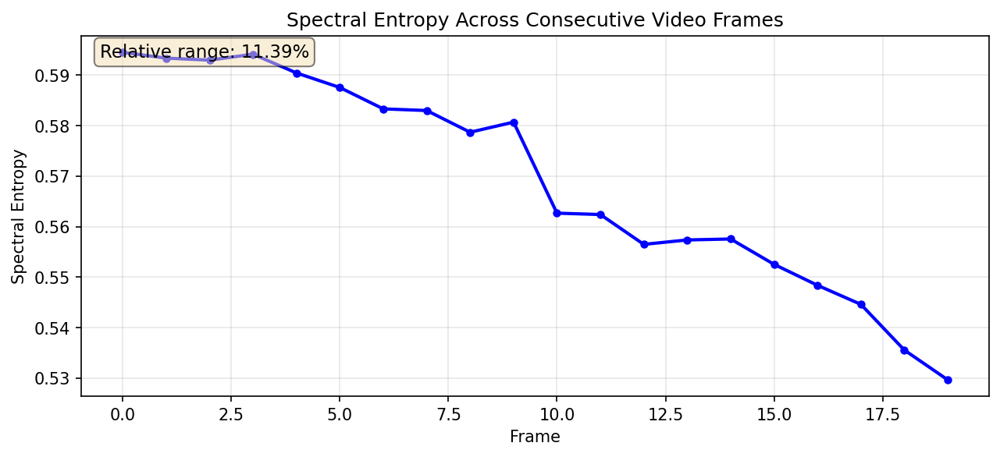
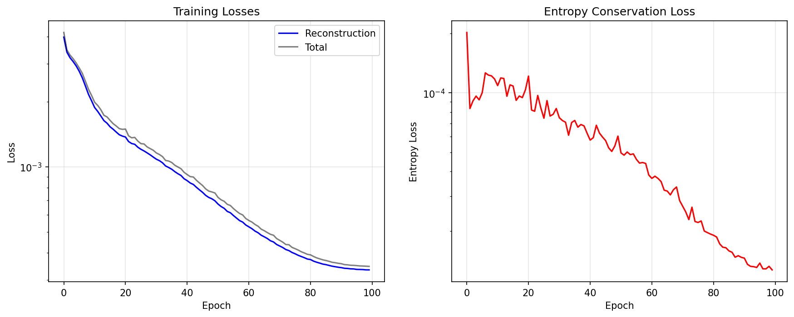
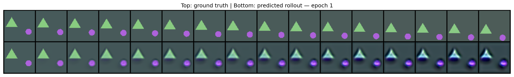
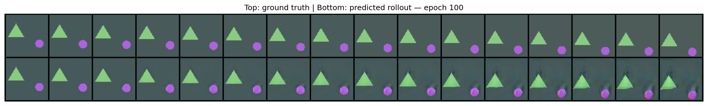
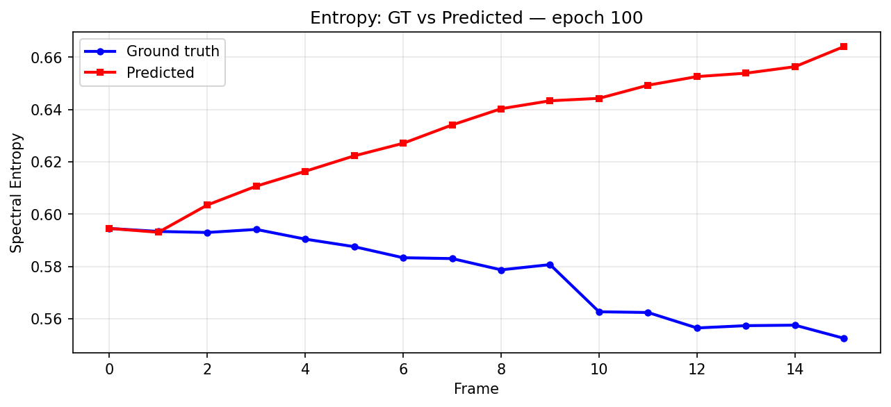
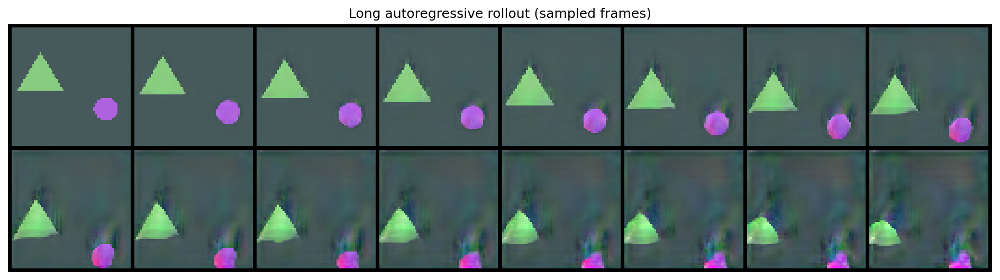
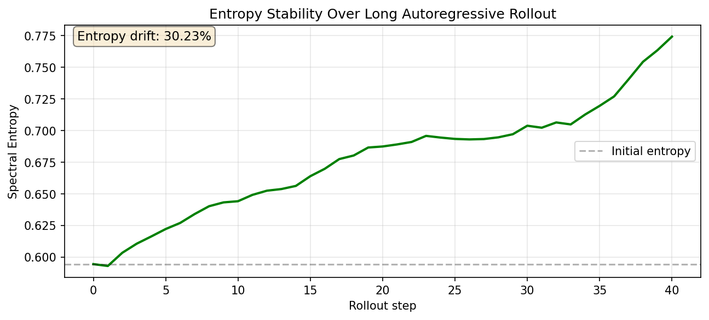

Consecutive video frames barely change in spectral entropy, even though the pixels themselves change a lot. This project tests that hypothesis directly, then trains a next-frame model whose loss explicitly penalizes any entropy drift between the input frame and its prediction — treating frame-to-frame prediction as a move along a constant-entropy manifold rather than an unconstrained regression.
A synthetic dataset of 500 short videos (20 frames each, moving shapes on a drifting-color background) gives full control over ground truth: every frame-to-frame change is smooth motion, with no scene cuts or lighting changes that would genuinely destroy or create information. Three entropy measures were computed on every consecutive frame pair — spectral entropy (Shannon entropy of the Fourier power spectrum), pixel-histogram entropy, and spatial variance as a cheap entropy proxy.
| Measure | Mean rel. change | Std | Max |
|---|---|---|---|
| Spectral entropy | 1.22% | 1.43% | 14.00% |
| Pixel-histogram entropy | 2.32% | 3.17% | 74.36% |
| Spatial variance | 2.00% | 1.77% | 14.25% |

Rather than predicting frame t+1 directly, the network predicts a flow field v such that ut+1 = ut + v(ut) — a U-Net-style encoder/decoder with residual blocks, whose final output layer is zero-initialized so the network starts out as the identity map (predict no change at all) and has to earn every pixel of motion during training. Training combines two losses: standard reconstruction MSE against the true next frame, plus an entropy-conservation term that penalizes any difference between the spectral entropy of the input frame and the spectral entropy of the prediction.
| Setting | Value |
|---|---|
| Dataset | 500 synthetic 20-frame videos, 64×64, moving shapes — 9,500 consecutive-frame pairs |
| Model size | 4,171,331 parameters |
| Optimizer | AdamW, lr 2e-4, cosine annealed, gradient-clipped at 1.0 |
| Training | 100 epochs, batch size 32 |
| Loss weight | λ = 1.0 for the entropy-conservation term |

Every 20 epochs, the model performs a 16-step autoregressive rollout — feeding its own prediction back in as the next input — starting from the first real frame of a held-out sequence.


The entropy-conservation loss shrinks the entropy gap on individual training pairs, but it doesn't prevent compounding drift once the model's own predictions become its next input.

Pushed out to 40 autoregressive steps — twice the length of any training sequence — the model keeps both shapes recognizable and roughly on their correct trajectories, but visible noise and texture accumulate around their edges.


The core hypothesis held up: real consecutive frames really do have near-constant spectral entropy (~1.2% mean frame-to-frame change), and training with an explicit entropy-conservation loss produces a model that tracks motion far better than one trained on reconstruction alone. But conserving entropy on individual training pairs is a different thing from conserving it across an autoregressive chain of the model's own predictions — small per-step errors compound into a fairly large drift after enough steps, the same exposure-bias problem that affects autoregressive next-frame prediction in general. An entropy penalty computed on single steps doesn't automatically buy long-horizon stability.